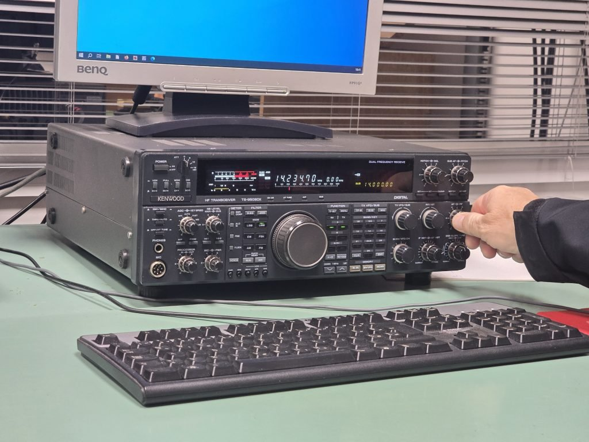
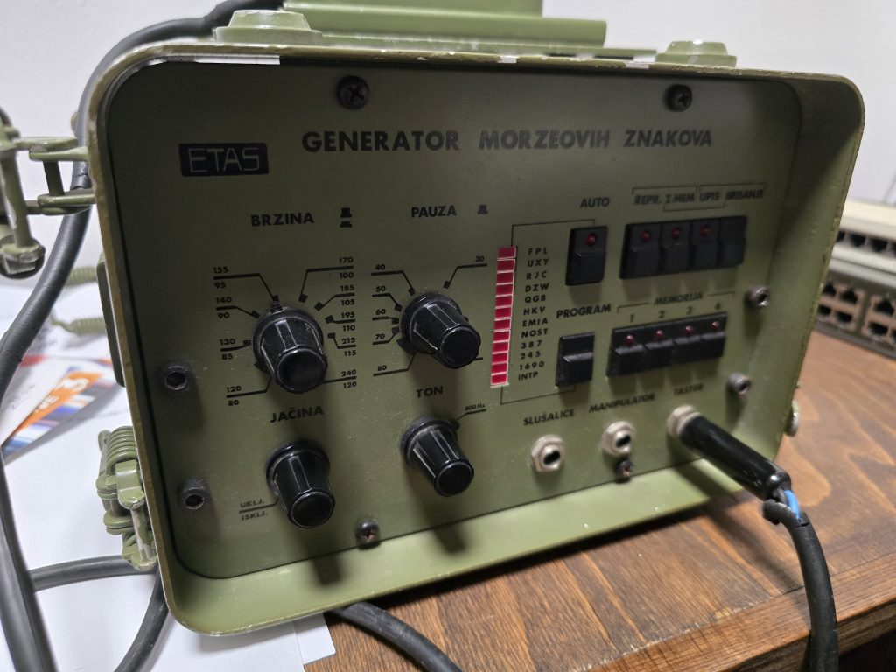
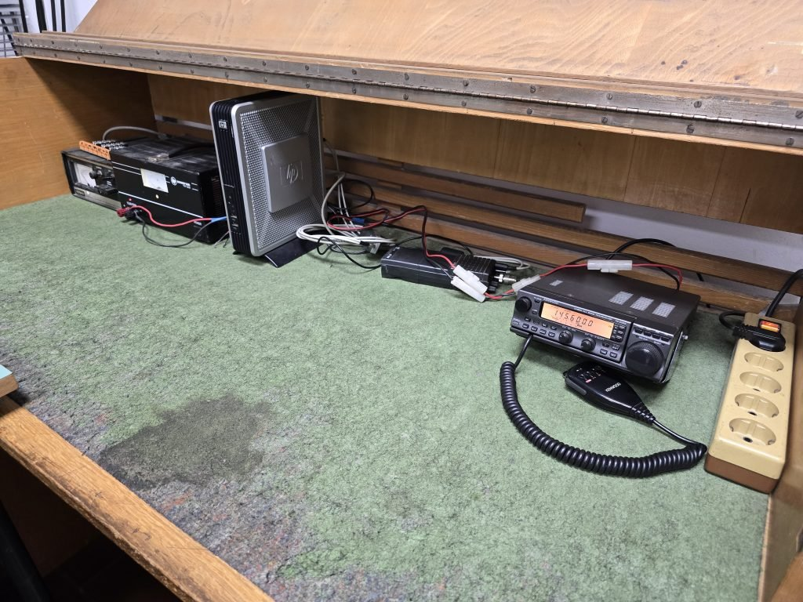
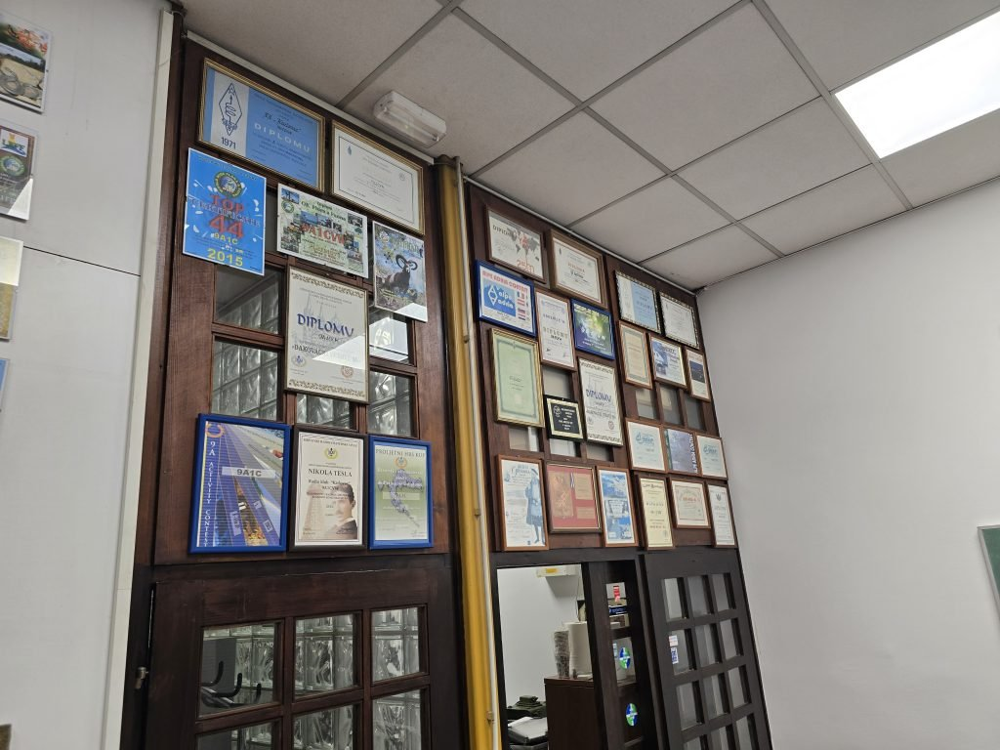
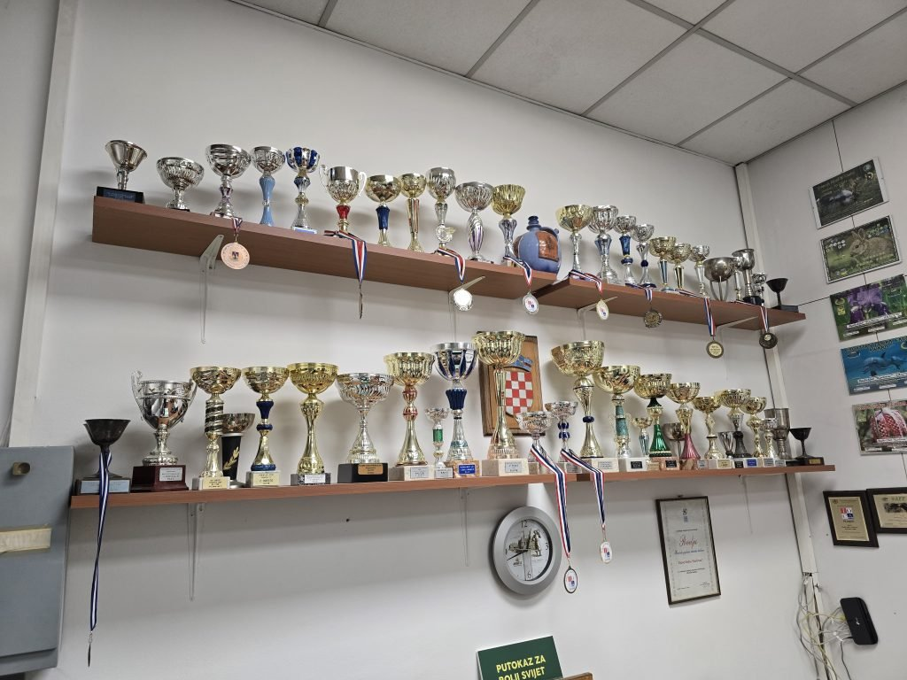
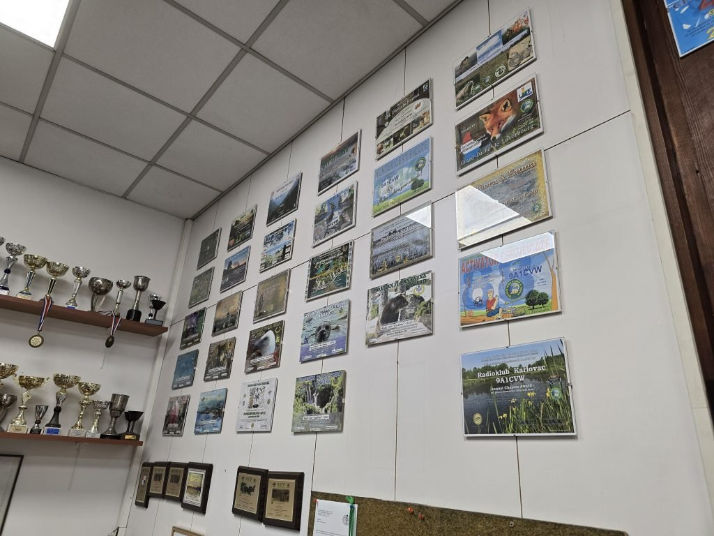

Prostorije Kluba
Sjedište Radiokluba Karlovac nalazi se u samom središtu grada, na adresi Maksimilijana Vrhovca 15. Ovdje se okupljaju članovi kluba, održavaju sastanci, radionice i edukacije za nove članove i mlade radioamatere.
Zbog ograničenih mogućnosti postavljanja antenskih sustava na ovoj lokaciji, praktične aktivnosti poput natjecanja i aktivacija često se odvijaju na našoj natjecateljskoj lokaciji na brdu Sveti Križ. Lokacija Sveti Križ smještena je nedaleko od grada, na idealnoj nadmorskoj visini od 318 metara, što pruža izvrsne uvjete za radijske veze i natjecanja.






Za posjete prostorijama ili dodatne informacije slobodno nam se obratite putem kontakata navedenih na našoj web stranici ili nas posjetite tijekom uredovnog vremena, svakog utorka od 18 do 20 sati.